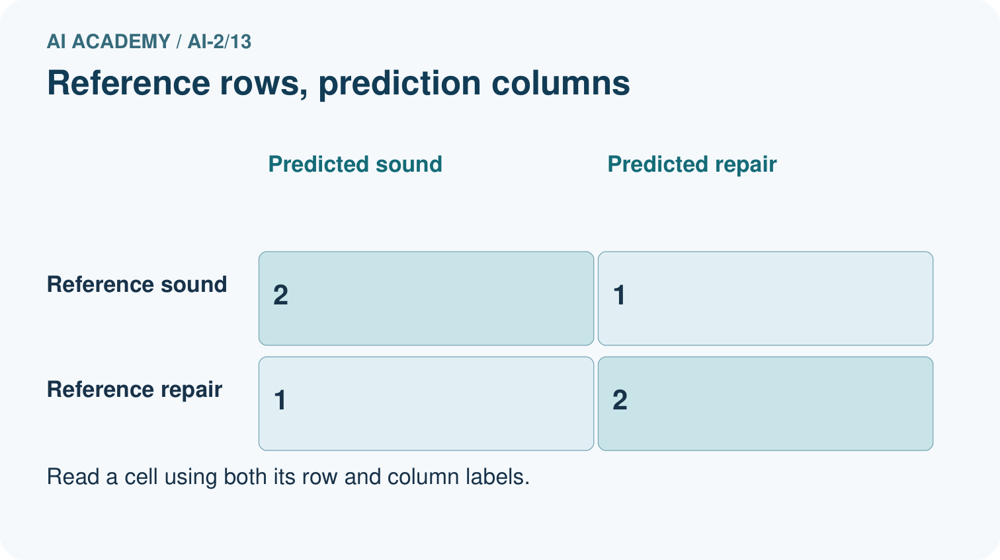
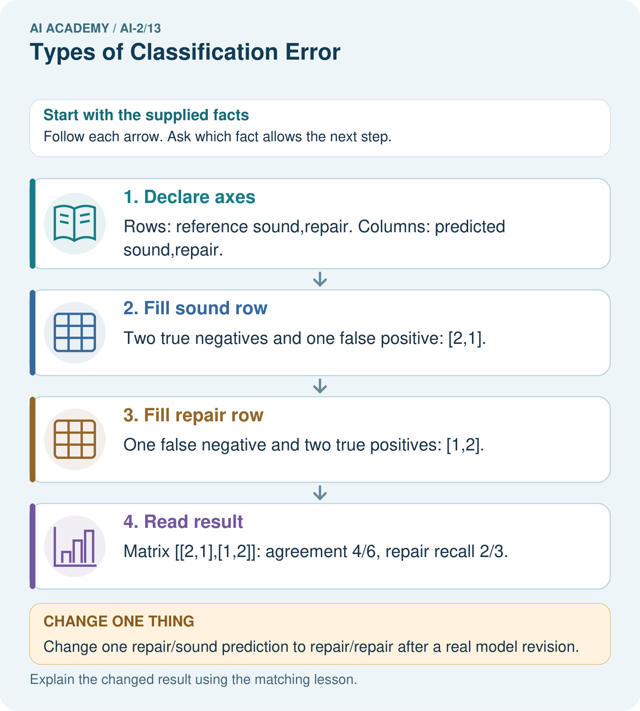

AI Academy · Level 2 · Grade 7 · Week 13 · Teacher guide
Types of Classification Error
Learn to understand, design, build, test and explain AI systems responsibly.
Project: Transparent Book Recommender
Teacher guide · 1 of 7
Types of Classification Error
Teach the learning cycle
Primary target: Build a labelled confusion matrix from matched reference and prediction pairs
| Session | Sequence and minutes | Resources |
|---|---|---|
| Session 1 · Understand · 45 min | 0–7: recall and prerequisite; 7–15: inspect the concrete case and predict; 15–30: teacher models the worked trace; 30–40: learners explain a step using the text and visual; 40–45: check the core idea. | Sections 1–6; record the brief recall in the workbook. |
| Session 2 · Practise · 45 min | 0–5: retrieve the procedure; 5–15: W2 completion practice; 15–23: explain and check with a partner; 23–30: each learner answers the misconception check; 30–40: targeted reteaching or a harder variation; 40–45: prepare the investigation. | Sections 7–10; use the matching workbook W2 and misconception check. |
| Session 3 · Investigate and transfer · 45 min | 0–5: retrieve the decision rule; 5–20: investigate or trace; 20–30: start the independent case; 30–38: connect the project; 38–43: act on feedback; 43–45: plan the return check. | Sections 9 and 11–14. Give extra time to finish the full task set; use Section 15 when the week includes a coding lab. |
This is a starting allocation of 135 minutes, not a validated duration. Preserve all named topics. Schedule extra time for connected examples, the full investigation, independent cases and project building. Repeated copies of a case share one recorded attempt; they are not new evidence.
Case exposure check: this source example appears in ai-2/13, ai-4/15. Reuse a familiar case for recall or modelling; verify that the case used to assess transfer has not already received feedback.
Retrieval answer guidance
Accuracy as a Fraction
Without opening the old lesson, explain one key idea from Accuracy as a Fraction. Give an example and a mistake that the idea helps you avoid.
Look for: Explain why overall accuracy can hide failure on a less common class
Reference example, not the only acceptable wording: The training-majority rule always predicts clear. Matrix [[16,0],[4,0]] gives 16/20=80 percent, FP=0,FN=4. It misses all four blocked cases, so the overall score hides complete failure on that evaluated class.
Human Classifier Simulation
Without opening the old lesson, explain one key idea from Human Classifier Simulation. Give an example and a mistake that the idea helps you avoid.
Look for: Construct a classifier with a stated input format, selected rule and recorded output
Reference example, not the only acceptable wording: Require a present height, unit cm, a whole number and range 1 through 10 inclusive. For example, 7 cm is accepted; blank is missing, 60 mm has the wrong unit and 11 cm is outside the range. Fractional values such as 4.5 cm also fail. The contract defines accepted inputs; it does not list only the fitting records or establish prediction correctness.
Rows Columns and Data Types
Without opening the old lesson, explain one key idea from Rows Columns and Data Types. Give an example and a mistake that the idea helps you avoid.
Look for: Specify a table schema
Reference example, not the only acceptable wording: activity: nonempty text; minutes: integer from 0 to 60 inclusive.
Use the student module and workbook section with this exact week title. The worked case, independent question and answers below form one aligned lesson sequence.
What the learner must demonstrate
Positive means 'should recommend'. A book that should be recommended is rejected; a book that should not be recommended is accepted. Name both errors and explain who experiences each consequence.
Concept to explain
Week 13: Types of Classification Error
| Term | Meaning |
|---|---|
| true positive | An actually positive case correctly predicted positive. |
| true negative | An actually negative case correctly predicted negative. |
| false positive | An actually negative case predicted positive, under a stated definition of positive. |
| false negative | An actually positive case predicted negative, under a stated definition of positive. |
Prepare the class
Use the supplied scenario, student illustrations and blank paper. For numeric work, offer counters or a calculator after learners show the setup. Fictional records are supplied; personal data and paid accounts are unnecessary.
Allow 80 minutes: recall 8; explanation 12; worked demonstration 15; guided practice 20; independent assessment 15; project and reflection 10. Extend the lab into a second session when needed.
Preparation for the connected explanation
Teach two 45-minute sessions. Start with ID cards and a physical two-by-two table so students count matched pairs before learning abbreviations. Use blocked as positive consistently. Keep raw counts visible and postpone precision and recall formulas to later weeks.
Readiness answer
IDs preserve which reference belongs to each prediction and which examples were wrong. The same accuracy can come from different predictions and error patterns.
Printed lesson and workbook
Eight ID cards carrying the worked reference and prediction pairs
Two-by-two sorting mat labelled reference rows and prediction columns
Optional Python 3 editor with no packages required
End goal for the pictorial case
By the end, I can construct a confusion matrix with declared axes and name both error types.
This added worked case illustrates the week’s main idea. Retain all original and connected topics; schedule its practice within the teaching cycle.
Teacher guide · 2 of 7
Explain the mechanism
Explain the mechanism
Input → Process → Output
Trace the information. At each stage, ask what changed and how you could test it.
Which stage could fail even when the other two are correct? Explain:
Predict first. Then check each step. A correct answer without visible reasoning is incomplete evidence.
1. Evidence record: TP=4, TN=5, FP=2, FN=1.
2. Correct = TP + TN = 9; all = 12; accuracy = 9/12 = 75%.
3. False alarms = 2; misses = 1.
4. Which error matters more depends on the decision’s consequence.
Recalculate, retrace, or restate the reasoning in your own representation:
CHECK Did the evidence answer the exact question? Did the total, path, or source record stay consistent?
Concrete teaching case
Positive means should recommend. Actual/predicted pairs are yes/yes, no/yes, yes/no, no/no.
Name the four outcomes.
Exact explanation to model
True positive, false positive, false negative, true negative. Define positive before naming errors.
Explain the added worked example
A confusion matrix shows which labels a classifier mixes up. It counts examples after predictions are made; it does not fit or repair the classifier. Week 12 had reference/prediction pairs clear/clear, blocked/blocked, clear/blocked. A labelled table can preserve the type of that error as well as the total score.
This week uses eight new fictional evaluation records from a frozen classifier. They are not extra predictions from the Week 12 code. Each ID appears once with a reviewed reference and one prediction. The grouped table below lists every ID. Keep reference and prediction paired by ID before counting.
Use reference labels for rows and predicted labels for columns. On both axes the order is clear, then blocked. Declare blocked as the positive class and clear as negative. Positive means the condition of interest, not good or safe. A missed blocked case and a false alarm are different errors.
index maps clear to 0 and blocked to 1. Each paired record adds one to its reference row and prediction column. The script prints [[2, 1], [2, 3]] then 5 8. It assumes unique IDs and only these two labels. Check IDs and missing or unresolved references before counting; the code does not validate all those conditions.
The diagonal cells count correct predictions: 2+3=5. Off-diagonal cells count mistakes: 1+2=3. Every record must contribute exactly once. This is a count matrix, not percentages or probabilities. Keep the axis labels even when copying the numbers.
Key terms
| Term | Meaning |
|---|---|
| Confusion matrix | A table counting reference and prediction combinations |
| Positive class | The class chosen as the condition of interest |
| False positive | A positive prediction when the reference is negative |
| False negative | A negative prediction when the reference is positive |
Model the reasoning aloud
Use the complete worked example below before asking learners to complete W2. Reveal a small part, invite a prediction, then explain the deciding step. These teacher notes contain solutions; do not reveal the independent case answer during modelling.
Blocked is the positive class
True means prediction agrees with the reference. It does not prove that the reference annotation is infallible. Resolve disputed labels with the documented review policy rather than silently changing them to match predictions.
| Thinking move | Teacher prompt |
|---|---|
| Plan | What is given? What is the question? Which procedure fits these facts? |
| Do | Point to each input and intermediate step in the worked trace. Name the rule that allows the next step. |
| Check | Does the output answer the question? Which assumption or limitation prevents a larger claim? |
Use the diagram and verbal explanation together. Ask learners to match a sentence to a specific visual step; do not assign learners fixed visual or auditory learning styles.
A pictorial worked case: Types of Classification Error
A fictional book-condition checker predicts repair or sound.
The facts we will use
Use reference rows and prediction columns in order sound,repair. Repair is positive.
Six reference/prediction pairs: sound/sound twice; sound/repair once; repair/sound once; repair/repair twice.


Read the picture one step at a time
Why this result follows
Each case enters one cell according to its reference and predicted label. The off-diagonal cells represent different mistakes: a false alarm on a sound book versus a missed repair. Trace the cell definitions before naming rates; swapping axes changes the table’s interpretation even if its diagonal sum remains unchanged.
What this example does not establish
Reference labels can themselves be disputed; a true-positive name does not guarantee the annotation is infallible.
Change one thing in the pictured case
Change: Change one repair/sound prediction to repair/repair after a real model revision.
Prediction: Repair row becomes [0,3]; agreement becomes 5/6.
Reason: One false negative moves to true positive; the sound row stays [2,1].
Ask while showing the picture
Cover the result. Ask learners to name the inputs and predict the next step. Uncover one step, connect the icon to the actual procedure, and explain its evidence. Then change the supplied condition and compare. The picture is a representation; it does not document execution of a real AI model.
Teacher guide · 3 of 7
Demonstrate and guide practice
Demonstrate and guide practice
Board sequence
Write the given facts: Positive means should recommend. Actual/predicted pairs are yes/yes, no/yes, yes/no, no/no.
Write the question to explain: Name the four outcomes.
Reveal after predictions: True positive, false positive, false negative, true negative. Define positive before naming errors.
Keep for an independent attempt: Positive means sports. A sports book predicted other and a non-sports book predicted sports occur. Name each error and its consequence for the sports shelf.
Classroom dialogue
Ask: Which facts are given, and which would we have to assume? Learners mark relevant details before discussing answers.
Say: Predict first. Show the rule, information path or calculation that would produce the result. A correct guess is not yet an explanation.
Reveal reasoning one step at a time. Explain why a tempting alternative fails. Write units and denominators for arithmetic, trace conditions for decisions, and identify supporting sources for claims.
In pairs, one learner solves while the other checks evidence; exchange roles. Remove the worked answer before independent assessment.
Model these guided questions
Guided: V3 belongs at reference clear/predicted blocked, FP. V4 belongs at reference blocked/predicted clear, FN. Exit: both have five diagonal matches, but distribute three mistakes differently: FP=1,FN=2 versus FP=0,FN=3. Report identical evaluation records, axes, label order, positive class, totals and task consequences before comparing.
Case-specific teaching sequence
| Stage | Teacher action |
|---|---|
| Session 1 start to 7 minutes | Retrieve the three Week 12 reference/prediction pairs and explain why accuracy loses error detail. |
| 7 to 18 minutes | Sort all eight new ID cards into labelled cells. Complete W1 before showing code output. |
| 18 to 32 minutes | Trace the counting code. Connect each increment to a cell and check the diagonal. |
| 32 to 45 minutes | Declare blocked positive, read the visual and complete W2 and the guided question. |
| Session 2 start to 8 minutes | Retrieve row versus column meaning and the positive class without relying on cell position alone. |
| 8 to 20 minutes | Check totals and compare equal-accuracy matrices in W3. Explain the different error tradeoffs. |
| 20 to 35 minutes | Collect W4 independently before support. Require labelled axes, totals and ID-level error explanations. |
| 35 to 45 minutes | Use W5 and the exit question to limit claims. Offer the fresh retry after feedback and record support. |
Reduce help deliberately
Completion task: Declare blocked positive. Give TP,TN,FP,FN counts and explain V3 and V4 in plain language. Does positive mean a desirable outcome?
Teacher check: TP=3, TN=2, FP=1, FN=2. V3 predicts blocked for a reference-clear case, a false alarm or FP. V4 predicts clear for a reference-blocked case, a missed blocked case or FN. Positive names the chosen class; it does not mean desirable.
Start by identifying the given inputs together. Leave the intermediate steps blank. If needed, model one step, then withdraw that help on the next step. Move to a full trace only when the partial trace is understood. For partners, alternate explainer and checker; collect a response from every learner before discussion.
Individual reasoning check
Use the worked case for Confusion matrices. Proposed explanation: “Positive means good”. Decide whether this explanation is supported. Point to the step or supplied fact that decides; explain your repair if needed.
Expected correction: Positive is the chosen condition of interest; blocked is positive in this exercise.
Collect explanations, not only yes/no votes. If a misunderstanding is common, re-model the relevant step for the class. If it affects a few learners, give a short targeted group explanation while others solve a more demanding variation.
Pictorial practice question
Which error causes a sound book to be sent for unnecessary repair review?
Reasoned teacher answer
The sound/repair cell is a false positive; there is one in the original matrix.
Changed-case reasoning: Repair row becomes [0,3]; agreement becomes 5/6. One false negative moves to true positive; the sound row stays [2,1].
Collect each learner’s explanation before discussion. Use the first missing connection between input, deciding step and result to choose support. This question is worked-case practice, not fresh mastery evidence.
Teacher guide · 4 of 7
Run the weekly evidence lab
Run the weekly evidence lab
Words You Can Use to Reason
A definition matters when you can recognize the idea, use it, and contrast it with a near-miss.
Predict → Test → Record → Explain
Keep expected and actual results separate. Surprises are useful data when recorded honestly.
Place 12 actual/predicted pairs into a 2×2 grid, total each cell, check the total equals 12, and explain one error cost.
What did the hardest test teach you that the normal test did not?
Make the lab runnable
Use the concrete case as the shared normal case and the independent question as a second case. Each pair creates a boundary or missing-information case and predicts its result before testing. Keep the expected result separate from an observed mistake.
| Record | What to capture |
|---|---|
| Input or evidence | Exact data, instruction or claim |
| Expected result | Answer or safe fallback declared before the run |
| Observed result | Actual result, including errors |
| Explanation | Rule, calculation or evidence explaining the outcome |
| Next test | One justified change and a new prediction |
Diagnose and reteach
For guessing, return to given facts and request a trace. For vocabulary without application, use one example and one non-example. For arithmetic errors, check the setup before the calculation. Finish with a different uncoached case before recording mastery.
Address these additional misconceptions
Positive means good: Positive is the chosen condition of interest; blocked is positive in this exercise.
A matrix has one universal visual orientation: Check whether rows are references or predictions and inspect class order. Our convention uses reference rows and prediction columns.
Zero errors in a cell means no future risk: It is an observed count on one evaluation set. Coverage, sample size and future conditions still matter.
Match the support to the first error
| What the response shows | Next teaching action |
|---|---|
| Missing or misread facts | Read the case aloud, mark supplied versus unknown facts, and let the learner restate it. |
| Wrong procedure | Return to the deciding step in the worked case. Contrast it with the proposed incorrect explanation. |
| Arithmetic or implementation error | Trace intermediate values or lines; preserve the first mismatch and retry that step. |
| Correct result without a reason | Ask for a trace and a changed case before marking independent understanding. |
| An unsupported wider claim | Ask which supplied evidence supports the claim and which further observation would be needed. |
Offer an oral explanation, drawing, enlarged visual or fewer examples when that removes a reading/writing barrier. Keep the same reasoning goal. Stretch secure learners by changing a boundary or assumption and asking them to defend the effect, not simply by assigning more of the same questions.
Teacher guide · 5 of 7
Assess and explain the answers
Assess and explain the answers
Worked case answer
True positive, false positive, false negative, true negative. Define positive before naming errors.
Independent question
Positive means sports. A sports book predicted other and a non-sports book predicted sports occur. Name each error and its consequence for the sports shelf.
Expected independent answer
The first is a false negative, a missed sports book. The second is a false positive, an incorrect book added to the sports shelf.
What counts as evidence
| Criterion | 0 points | 1 point | 2 points |
|---|---|---|---|
| Result | Incorrect or absent | Partly correct | Correct with necessary conditions |
| Reasoning | No supporting trace | Some steps | Clear mechanism, calculation or source support |
| Limit | Overclaims certainty | Vague limitation | Relevant uncertainty or missing fact |
| Transfer | Copies without adapting | Adapts with prompts | Solves a changed case independently |
Use 6/8 as a classroom checkpoint, with 2 required for both Result and Reasoning. This is a proposed teaching rule, not a validated certification threshold. Do not count a coached answer as independent mastery; correct unsafe or unsupported claims regardless of total.
Feedback
Ask the learner to find the evidence that challenges this claim: “False positive and false negative describe the same mistake.” Keep the first attempt and an uncoached retry separate.
Original transfer answer
The first is a false negative: a suitable option is missed. The second is a false positive: an unsuitable option is shown. Error costs depend on the task; they cannot be ranked solely from the names. Keep 'positive' defined throughout the analysis.
Explanations for the additional workbook examples
W1 Build the count matrix
Use all eight worked IDs. Draw a matrix with reference rows and prediction columns, both ordered clear then blocked. Place the IDs in cells before writing the counts.
Reference clear/predicted clear contains V1,V2: 2. Clear/blocked contains V3: 1. Blocked/clear contains V4,V5: 2. Blocked/blocked contains V6,V7,V8: 3. Matrix [[2,1],[2,3]].
W2 Explain the two error types
Declare blocked positive. Give TP,TN,FP,FN counts and explain V3 and V4 in plain language. Does positive mean a desirable outcome?
TP=3, TN=2, FP=1, FN=2. V3 predicts blocked for a reference-clear case, a false alarm or FP. V4 predicts clear for a reference-blocked case, a missed blocked case or FN. Positive names the chosen class; it does not mean desirable.
W3 Audit totals and equal accuracy
Give the worked row totals, column totals, total count and accuracy. Compare its errors with [[3,0],[3,2]] using the same axes and eight reference records.
Rows total 3,5; columns total 4,4; total 8; accuracy (2+3)/8=5/8=62.5 percent. The comparison matrix also scores 5/8, but has FP=0 and FN=3 rather than FP=1 and FN=2. Same accuracy can hide different error types.
W4 Count a fresh evaluation independently
Each pair below is reference then prediction: R1 clear/clear, R2 clear/blocked, R3 clear/blocked, R4 blocked/blocked, R5 blocked/clear, R6 blocked/blocked. Use clear then blocked on both axes and reference rows. Build the matrix, give row and column totals, name TP,TN,FP,FN with blocked positive, and calculate accuracy.
Matrix [[1,2],[1,2]]. Row totals 3,3; column totals 2,4; total 6. TP=2,TN=1,FP=2,FN=1. Accuracy (1+2)/6=3/6=50 percent. False alarms are R2,R3; the missed blocked case is R5.
W5 Interpret a zero count carefully
A report gives zero false positives but omits the evaluated sample size, axes and class definitions. What information is missing, and why does zero not prove that future false alarms are impossible?
Request split and sample size, labelled reference/prediction axes, class order and positive-class definition, plus the remaining counts. Zero describes only the observed evaluation cases; limited coverage or few negative cases may hide future errors. It is not a guarantee.
Assess independent transfer
Selected case: Each pair below is reference then prediction: R1 clear/clear, R2 clear/blocked, R3 clear/blocked, R4 blocked/blocked, R5 blocked/clear, R6 blocked/blocked. Use clear then blocked on both axes and reference rows. Build the matrix, give row and column totals, name TP,TN,FP,FN with blocked positive, and calculate accuracy.
Selected case answer
Matrix [[1,2],[1,2]]. Row totals 3,3; column totals 2,4; total 6. TP=2,TN=1,FP=2,FN=1. Accuracy (1+2)/6=3/6=50 percent. False alarms are R2,R3; the missed blocked case is R5.
| Dimension | Evidence required |
|---|---|
| Explanation | Names the applicable idea or procedure and ties it to the supplied facts. |
| Trace and result | Preserves the given inputs and shows the relevant intermediate steps; distinguishes a prediction from an observed execution. |
| Limits | States the assumptions, missing evidence or conditions under which the result would change. |
Record each dimension as not yet, with support, or independent. Accept a valid alternative procedure with a defensible trace. Do not penalise an honestly recorded model failure if the learner correctly explains its evidence and limits.
Feedback that the learner uses
Name the earliest unsupported step and give one action to repair it. Have the learner make that repair now and explain why. Then assess the relevant skill on a fresh, fully specified case. Confirm it was not previously practised with feedback; solve and check the new case before assigning it. A follow-up design prompt is a starting brief, not automatically an equivalent test.
Teacher guide · 6 of 7
Connect and extend learning
Connect and extend learning
Transparent Book Recommender
Separate recommending an unsuitable book from failing to surface a suitable one.
Keep the decision, input, result, explanation and remaining limitation in the project evidence record. Retrieve this record next week rather than restarting the project.
Support and stretch
Trace one record or condition at a time with counters and labelled columns. Stretch: introduce a tie, boundary or missing field and declare its handling policy before rerunning.
Exit reflection
Ask for one decision the learner can now justify and one situation requiring more evidence or human review. Confidence ratings are separate from correct independent performance.
Bridge to the next week
Next: Week 14: Decision Trees. Retrieve today’s evidence and identify what carries forward and what is new.
Support and fresh reassessment
Give a blank labelled matrix and move one ID card at a time. Ask for reference first, prediction second before naming a cell. Extension: declare clear positive without changing the worked records. Then TP=2,TN=3,FP=2,FN=1; explain why the original matrix counts and accuracy remain unchanged if axis order stays clear then blocked.
Require W4 [[1,2],[1,2]], row totals 3,3, column totals 2,4, TP=2,TN=1,FP=2,FN=1 and accuracy 3/6. Fresh retry: S1 blocked/blocked, S2 blocked/clear, S3 clear/clear, S4 clear/clear, S5 clear/blocked, always reference first. Matrix [[2,1],[1,1]], rows 3,2, columns 3,2, TP=1,TN=2,FP=1,FN=1, accuracy 3/5. Require labelled axes and blocked positive before accepting abbreviations.
Week 14 covers accuracy and class imbalance. Carry forward row totals, class definitions and the full confusion matrix. Teacher reference: https://scikit-learn.org/stable/modules/generated/sklearn.metrics.confusion_matrix.html (reference rows, prediction columns and label order; reviewed 2026-09-28).
Plan the delayed return
Suggested return points in this level: ai-2/14, ai-2/16, ai-2/19. Use actual classroom dates, adjusting for holidays and gaps. One, three and six teaching weeks are scheduling choices, not a claimed optimal spacing.
At a delayed check, ask for the idea from memory and a changed application. Compare with the earlier independent response and record support used. For a new level, revisit the previous capstone before checking the new prerequisites.
| Record | Teacher evidence |
|---|---|
| Learner code and date | |
| Concept and case used; prior exposure | |
| Explanation / trace / limits | |
| Support and first repair | |
| Changed case and delayed outcome | |
| Next teaching action |
Use the evidence to choose reteaching or the next step. A completed page, confidence rating or attractive project does not by itself demonstrate understanding.
Project evidence from this case
Use a confusion table when evaluating recommender category predictions and attach concrete consequences to each error.
Teacher guide · 7 of 7
Prepare, teach and assess
Teaching target: Build a labelled confusion matrix from matched reference and prediction pairs
Prepare the labelled worked-case picture, the matching workbook, fictional input cards and a place for individual responses. No paid AI account is required for the paper reasoning activities.
| Session | Plan | Resources |
|---|---|---|
| Session 1 · Understand · 45 min | 0–7: recall and prerequisite; 7–15: inspect the concrete case and predict; 15–30: teacher models the worked trace; 30–40: learners explain a step using the text and visual; 40–45: check the core idea. | Sections 1–6; record the brief recall in the workbook. |
| Session 2 · Practise · 45 min | 0–5: retrieve the procedure; 5–15: W2 completion practice; 15–23: explain and check with a partner; 23–30: each learner answers the misconception check; 30–40: targeted reteaching or a harder variation; 40–45: prepare the investigation. | Sections 7–10; use the matching workbook W2 and misconception check. |
| Session 3 · Investigate and transfer · 45 min | 0–5: retrieve the decision rule; 5–20: investigate or trace; 20–30: start the independent case; 30–38: connect the project; 38–43: act on feedback; 43–45: plan the return check. | Sections 9 and 11–14. Give extra time to finish the full task set; use Section 15 when the week includes a coding lab. |
Before class, solve the supported practice: Declare blocked positive. Give TP,TN,FP,FN counts and explain V3 and V4 in plain language. Does positive mean a desirable outcome?
Reasoned practice answer: TP=3, TN=2, FP=1, FN=2. V3 predicts blocked for a reference-clear case, a false alarm or FP. V4 predicts clear for a reference-blocked case, a missed blocked case or FN. Positive names the chosen class; it does not mean desirable.
Check every learner before discussion: Use the worked case for Confusion matrices. Proposed explanation: “Positive means good”. Decide whether this explanation is supported. Point to the step or supplied fact that decides; explain your repair if needed.
Misconception repair: Positive is the chosen condition of interest; blocked is positive in this exercise.
Support: read the exact case aloud, enlarge the labelled picture, supply input cards and model only the first deciding step. Accept a spoken explanation or drawing; retain the reasoning goal.
Extension: Change one repair/sound prediction to repair/repair after a real model revision. Require a prediction and a reason before comparing. Expected result: Repair row becomes [0,3]; agreement becomes 5/6. Reason: One false negative moves to true positive; the sound row stays [2,1].
Independent assessment: withhold the reserved answer until the learner has attempted the new case. Record support separately from correctness.
| Criterion | Not yet | With support | Independent |
|---|---|---|---|
| Explanation | Names an answer without a deciding fact | Uses a hint to link fact and decision | Explains the deciding fact in own words |
| Trace or test | Cannot connect input and result | Completes steps with prompts | Traces or tests a changed case accurately |
| Limits and revision | Claims more than evidence supports | Names a limit after a prompt | States a defensible limit and useful next test |
Project checkpoint: Test changed cases. Keep normal, boundary and failure cases; compare expected and observed results.
Use the weekly teacher answer for topic-specific reasoning. A saved progress tick is an activity record; judge mastery from the learner’s explanation and evidence.